Manaruchulu is a traditional Andhra food brand operating dedicated e-commerce websites for customers in India and the United States. During my Digital Marketing internship, I worked across SEO, WordPress website management, Google Ads, product catalog management and content marketing to improve the brand's online presence. My responsibilities included keyword research, SEO-friendly product descriptions, blog writing, Facebook and WhatsApp Business catalogs, Canva brochures and website optimization.
D2C Food & Beverage
India 🇮🇳 & USA 🇺🇸
Digital Marketing Intern
WordPress • Google Ads • Canva • Ubersuggest • Meta Business Suite • WhatsApp Business
Manaruchulu is a D2C food brand specializing in authentic Andhra snacks, pickles, sweets, spice powders and traditional homemade food products. The business operates separate e-commerce websites for customers in India and the United States, providing localized shopping experiences tailored to each market.
During my Digital Marketing internship at Manaruchulu, I contributed to multiple areas of digital marketing, content management and e-commerce operations. My work involved improving website content, optimizing SEO, managing product catalogs and supporting digital marketing campaigns across both the India and US websites.
Updated website content, managed product information, organized categories and maintained website pages using WordPress.
Created SEO-friendly product descriptions and blog content to improve product discoverability and support organic search visibility.
Conducted keyword research using Ubersuggest to identify relevant search terms and content opportunities.
Created and organized Facebook and WhatsApp Business product catalogs for the US website to improve product accessibility and customer engagement.
Designed promotional brochures and marketing materials using Canva to support product promotion and brand communication.
Assisted with Google Ads campaign setup, keyword planning and ongoing campaign monitoring for the Manaruchulu websites.
WordPress was used to manage website content, update product information and organize the overall e-commerce experience for both the India and US websites. My responsibilities included maintaining product pages, updating content and supporting website organization to improve usability and search visibility.
Updated product information, pricing and descriptions to keep website content accurate and relevant.
Organized product categories and website navigation to improve the shopping experience.
Managed website pages and content using the WordPress dashboard while maintaining consistency across the website.
Assisted with regular website updates and content improvements to support ongoing digital marketing activities.
Through WordPress, I gained practical experience managing a live e-commerce website, understanding how website content, navigation and product organization contribute to both user experience and SEO.
Keyword research played an important role in improving product discoverability and planning SEO content for the Manaruchulu websites. Using Ubersuggest, I researched relevant search terms, analyzed keyword opportunities and selected keywords that matched user search intent for traditional Andhra food products.
Researched keywords related to Andhra pickles, snacks, sweets and spice powders to understand how customers search for traditional food products online.
Evaluated keyword relevance and search intent to identify opportunities for product pages, category pages and blog content.
Selected keywords that could improve product visibility while supporting content optimization and organic search performance.
Applied researched keywords while writing product descriptions, blog articles and website content to improve search relevance.
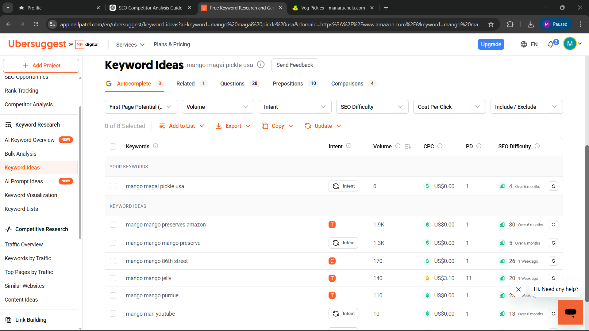
Figure: Keyword research conducted using Ubersuggest to identify relevant search terms and SEO opportunities.
The keyword research formed the foundation for product content optimization, blog writing and SEO improvements across the Manaruchulu websites. It helped ensure that website content aligned with customer search behaviour and supported long-term organic visibility.
Based on the keyword research, I implemented a range of SEO activities to improve the visibility and performance of the Manaruchulu websites. My work included creating SEO-friendly content, optimizing on-page SEO elements, supporting technical SEO tasks, monitoring website performance using Google Search Console and assisting with off-page SEO initiatives.
Wrote SEO-friendly product descriptions for traditional Andhra food products by naturally incorporating relevant keywords while maintaining readability and search relevance.
Created SEO-focused blog articles to support organic traffic growth, educate customers and target informational search queries.
Optimized SEO titles, meta descriptions, URL slugs and keyword placement using Yoast SEO to improve page relevance and search visibility.
Supported technical SEO activities by monitoring indexing, reviewing website health and ensuring important pages remained accessible to search engines.
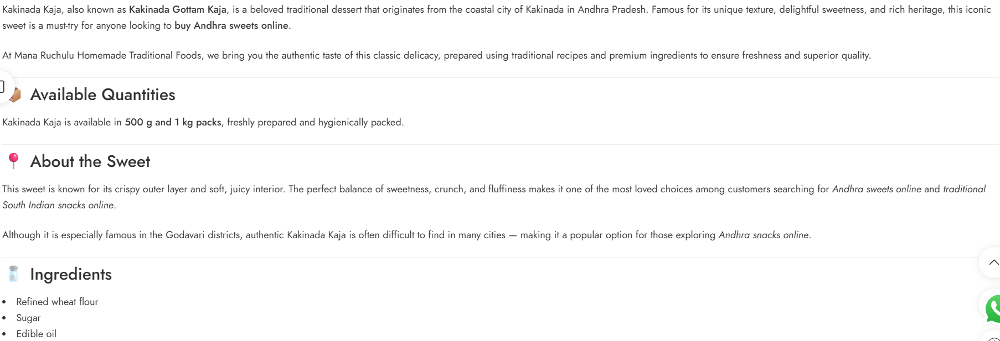
SEO-optimized product description published for the Kakinada Kaja
product page.
Click the image to view in full size.
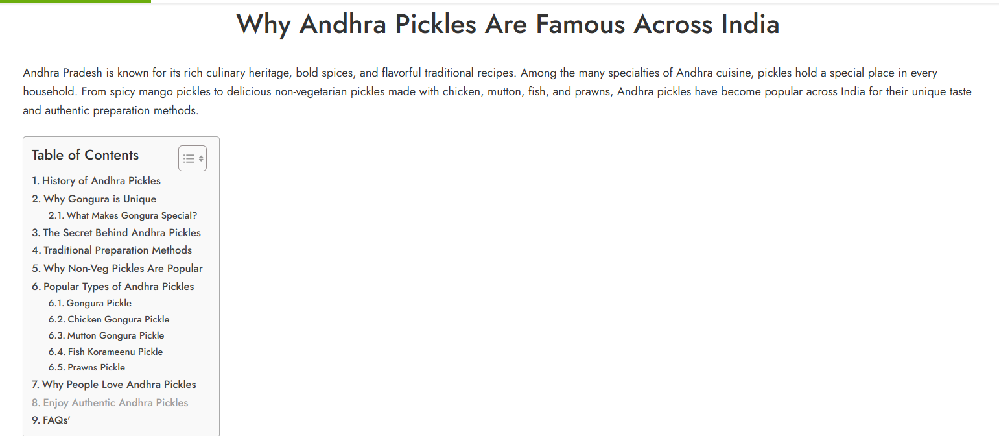
SEO-focused blog article created to improve organic search visibility
and educate customers about traditional Andhra pickles.
View Published Blog →
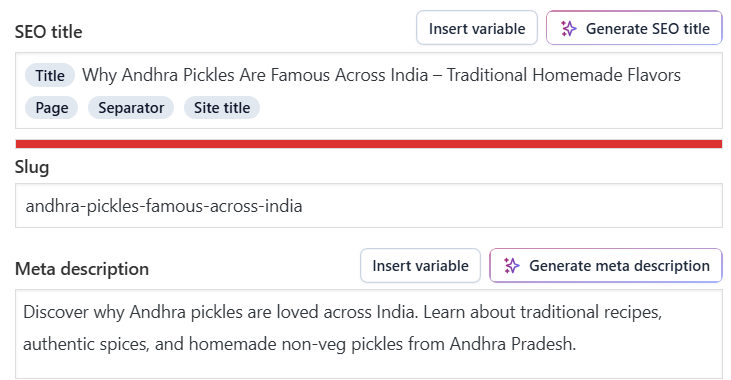
Yoast SEO optimization panel used for on-page SEO improvements.
Click the image to view in full size.
Along with on-page SEO, I used Google Search Console to monitor website performance, track indexing status and support technical SEO improvements. This helped identify search visibility trends, monitor indexed pages and understand how the website performed in Google Search.
Monitored organic search performance using Google Search Console by analyzing clicks, impressions, average CTR and average search position. These insights helped evaluate website visibility and identify opportunities for SEO improvements.
Used the Page Indexing report to monitor indexed and non-indexed pages, understand indexing issues and support technical SEO improvements for better search engine visibility.
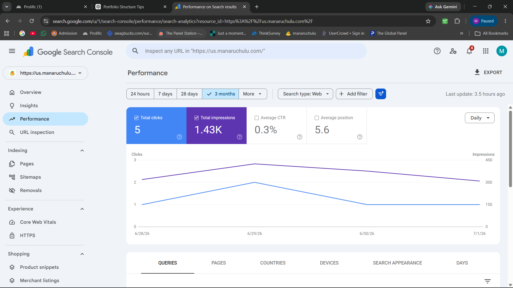
Google Search Console Performance report used to monitor clicks,
impressions, CTR and average search position.
Click the image to view in full size.
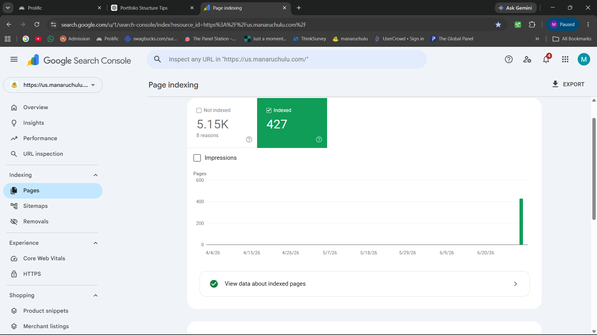
Page Indexing report used to monitor indexed and non-indexed pages
and support technical SEO monitoring.
Click the image to view in full size.
In addition to on-page and technical SEO, I supported off-page SEO activities to improve the website's online authority and visibility. My work focused on content distribution, directory submissions, community engagement and researching backlink opportunities to strengthen the overall SEO strategy.
Published SEO-focused articles on Medium, Blogger and Substack to increase brand visibility, expand content reach and create additional opportunities for referral traffic.
Submitted business information to relevant online directories to improve local search signals, brand visibility and citation consistency.
Participated in relevant Reddit and Quora discussions by answering user questions related to traditional Andhra food and sharing helpful information.
Researched guest posting opportunities and backlink prospects to understand link-building strategies and identify relevant websites for future outreach.
Published an SEO-focused article on Medium about traditional Andhra food as part of the off-page SEO strategy to improve content distribution and increase online brand visibility.
Read Published Medium Article →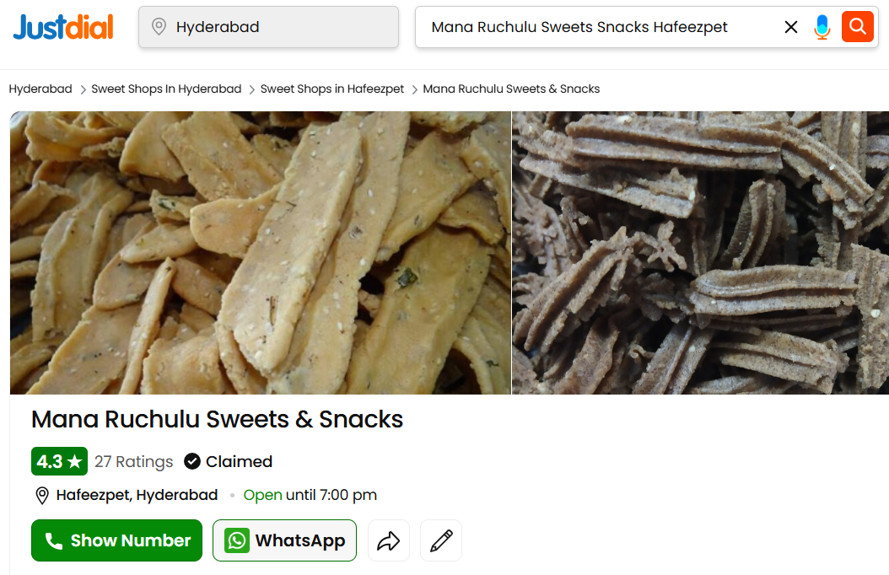
Business directory listing created to improve online visibility and citation signals.
Click the image to view in full size.
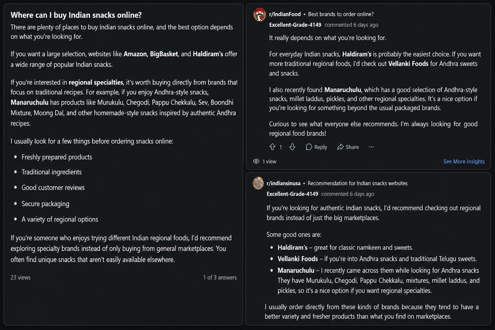
Community engagement through Reddit and Quora to support brand awareness.
Click the image to view in full size.
As part of my digital marketing internship at Manaruchulu, I planned, launched and optimized a Google Search campaign to improve brand visibility and attract users actively searching for authentic Andhra pickles. The campaign focused on keyword research, campaign structure, Responsive Search Ads, search term analysis and continuous optimization to drive high-quality website traffic.
Google Search
26 Jun – 6 Jul 2026
₹115 / Day
India
The objective of this Google Search campaign was to increase website visibility and attract users actively searching for authentic Andhra pickles. The campaign focused on driving qualified traffic through relevant keywords, structured ad groups and continuous campaign optimization.
Manaruchulu offers authentic homemade Andhra pickles through its online store. The challenge was to reach high-intent users while reducing irrelevant searches that could waste advertising budget.
The campaign was designed to reach users actively searching for authentic Andhra pickles while minimizing irrelevant traffic. Instead of targeting broad audiences, the strategy focused on high-intent keywords, organized ad groups and continuous optimization to improve traffic quality.
Reach users actively searching for authentic Andhra pickles and related products.
Increase visibility across Google Search results for relevant product searches.
Organize keywords into focused ad groups and improve traffic quality using negative keywords.
Create a structured campaign that could be optimized further using performance data.
Instead of placing every keyword into a single ad group, I organized the campaign based on customer search intent. This allowed each ad group to display more relevant Responsive Search Ads and direct users to the most appropriate landing page.
Targeted users searching for traditional vegetarian Andhra pickles including mango, gongura and homemade varieties.
Focused on high-intent searches related to chicken, fish, prawn and mutton pickles.
Captured users already searching for the Manaruchulu brand and directed them to the appropriate landing page.
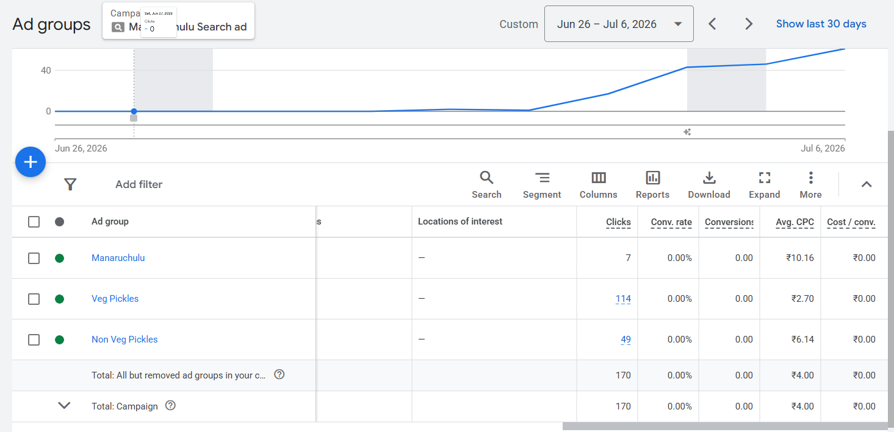
Figure 1. Campaign structure showing separate ad groups for Veg Pickles, Non-Veg Pickles and Brand keywords. Organizing the campaign into intent-based ad groups improved ad relevance and enabled better optimization.
I researched search queries based on user purchase intent and organized keywords into three distinct themes. A combination of Broad Match, Phrase Match and Exact Match keywords was used to balance reach with search relevance while targeting customers actively looking for authentic Andhra pickles.
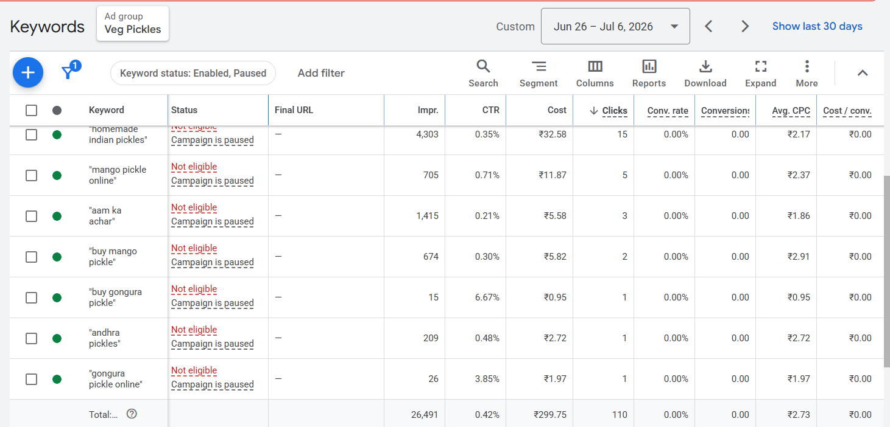
Keyword list showing high-intent search terms used to target customers looking for authentic vegetarian Andhra pickles.
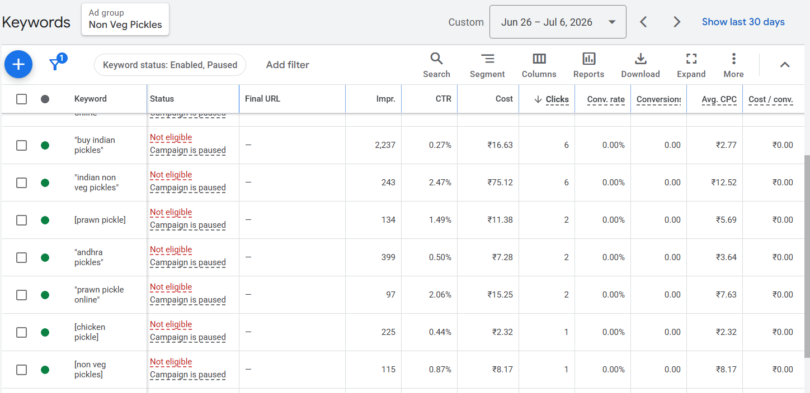
Keyword list focused on users searching for chicken, fish, prawn and other authentic non-vegetarian Andhra pickles.
Figure 3. Keywords were grouped into separate Veg Pickles and Non-Veg Pickles ad groups based on customer search intent. This structure improved keyword organization, ad relevance and campaign optimization.
I created Responsive Search Ads tailored to each ad group by combining keyword-focused headlines with compelling descriptions. This approach helped improve ad relevance while allowing Google Ads to automatically test different headline and description combinations.
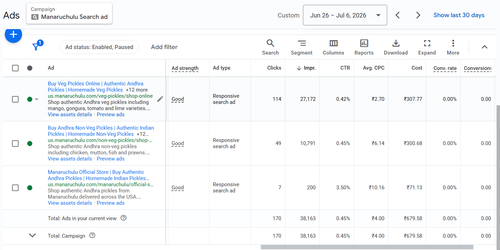
Figure 4. Responsive Search Ads created for the campaign using multiple headlines and descriptions. The ads were aligned with different keyword themes to improve ad relevance and allow Google Ads to automatically optimize the best-performing combinations.
Rather than directing every visitor to the homepage, I mapped each ad group to the most relevant landing page. This ensured that users reached content matching their search intent, creating a more relevant browsing experience and improving the overall campaign structure.
Users searching for vegetarian Andhra pickles were directed to the dedicated Veg Pickles category page, allowing them to browse relevant products immediately.
Searches related to chicken, fish and prawn pickles were routed directly to the Non-Veg Pickles category, reducing unnecessary navigation.
Users searching specifically for Manaruchulu were directed to the homepage where they could explore all product categories and featured collections.
Throughout the campaign, I regularly reviewed the Search Terms Report to understand the actual queries users searched before clicking the ads. This analysis helped identify high-performing search terms, discover new keyword opportunities, and eliminate irrelevant searches that were unlikely to result in meaningful website visits.
Identified search queries with strong commercial intent that could be expanded into future keyword themes.
Discovered new customer search patterns that can be incorporated into future campaigns to improve reach and relevance.
Used search query insights to refine targeting and improve campaign efficiency by reducing irrelevant traffic.
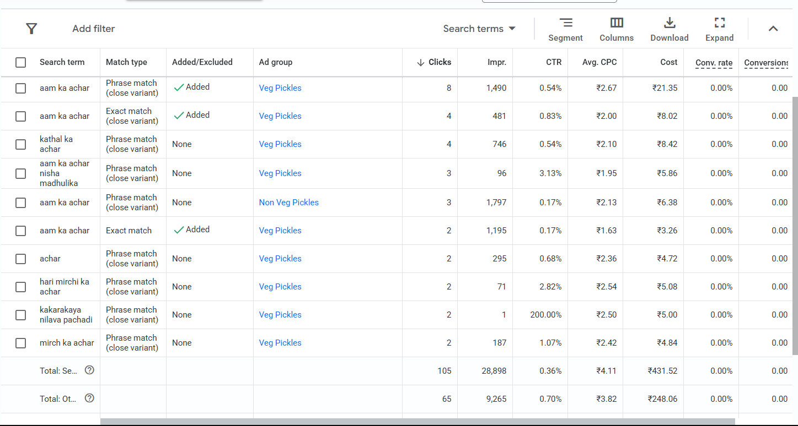
Figure 5. Google Ads Search Terms Report showing the actual queries users searched before clicking the ads. This report was used to identify high-intent searches, discover new keyword opportunities, and refine campaign targeting for improved relevance.
After reviewing the Search Terms Report, I identified queries that were unlikely to generate valuable website visits. Campaign-level negative keywords were added to reduce irrelevant traffic, improve budget efficiency, and ensure advertisements reached users with stronger purchase intent.
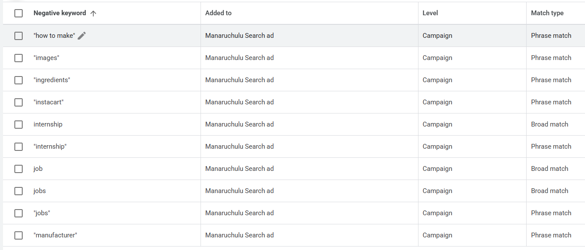
Figure 7. Campaign-level negative keywords added to exclude low-intent and irrelevant searches such as jobs, internship, images, ingredients, and how to make. This optimization improved traffic quality and helped prevent unnecessary ad spend.
Device performance analysis revealed that the majority of users accessed the campaign through mobile devices. This insight highlighted the importance of maintaining a fast, responsive, and mobile-friendly landing page to maximize user experience and improve future conversion potential.
Nearly 98% of all clicks were generated from mobile devices, indicating that customers primarily searched for products using smartphones.
Desktop users represented only a small portion of the campaign traffic.
Tablet traffic was minimal during the campaign period, contributing less than 1% of total clicks.
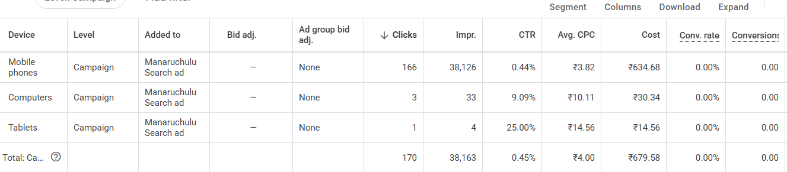
Figure 8. Google Ads Device Performance Report showing that mobile phones generated the vast majority of campaign traffic, accounting for 166 of 170 total clicks (approximately 98%). This insight reinforced the importance of optimising landing pages for mobile users to improve user experience and future conversions.
During the campaign period, Google Search Ads generated over 38,000 impressions while driving highly targeted traffic at a cost-efficient average CPC. Although no conversions were recorded, the campaign provided valuable performance insights that will guide future optimisation.
Impressions
Clicks
CTR
Avg. CPC
Total Spend
Conversions
The campaign successfully increased Manaruchulu's visibility on Google Search while attracting users actively searching for authentic Andhra pickles. Although no conversions were recorded during the campaign period, the campaign generated valuable performance insights that can be used to improve future advertising efforts.
Generated over 38,000 impressions, significantly increasing online visibility for the Manaruchulu brand and its product categories.
Achieved an average CPC of only ₹4.00, allowing qualified traffic to be acquired while remaining within the allocated budget.
The campaign highlighted opportunities to improve CTR, landing page relevance, ad copy, and conversion tracking for stronger future performance.
This project strengthened my understanding of planning, managing, and optimizing Google Search campaigns. Beyond launching advertisements, I gained practical experience in making data-driven decisions throughout the campaign lifecycle.
Learned how to organize campaigns into intent-based ad groups to improve relevance and campaign management.
Improved my understanding of keyword research, match types, and search intent while selecting high-quality keywords.
Gained experience writing Responsive Search Ads tailored to different keyword themes and customer intent.
Learned how to interpret campaign metrics, Search Terms Reports, device reports, and performance insights to make optimization decisions.
Understood the importance of negative keywords, ongoing optimization, and refining targeting to improve campaign quality.
Developed a more strategic approach by evaluating campaign performance and identifying opportunities for future improvements.
Although the campaign successfully generated visibility and qualified traffic, several opportunities were identified to improve future performance. If the campaign continued, I would implement the following optimisation strategies based on the insights gathered during this project.
Increase coverage of successful keyword themes while testing additional long-tail and location-based search terms.
Create additional Responsive Search Ads to test different headlines, descriptions, and value propositions.
Continuously review Search Terms Reports and expand the negative keyword list to eliminate low-intent searches.
Enhance landing page content, mobile responsiveness, and page speed to improve user experience and increase conversion potential.
Implement enhanced conversion tracking to measure purchases, enquiries, and other valuable customer actions more accurately.
After collecting sufficient conversion data, evaluate automated bidding strategies such as Maximise Conversions or Target CPA.
This project strengthened my practical understanding of Google Search Ads, from campaign planning and keyword research to performance analysis and optimisation. While the campaign did not generate conversions during the campaign period, it provided valuable insights into user behaviour, search intent, and data-driven decision making, helping me build a stronger foundation in performance marketing.
To improve product discoverability across Meta platforms, I created and managed product catalogs for the US website using Meta Commerce Manager and WhatsApp Business. This included creating product listings, managing variants, updating pricing, titles, descriptions and organizing products for a better shopping experience.
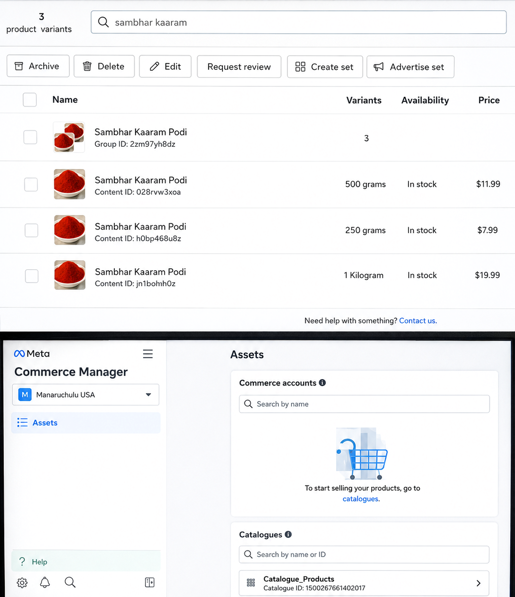
Meta Commerce Manager
Created and managed product listings, variants, pricing and catalog organization.
Click image to view full size.
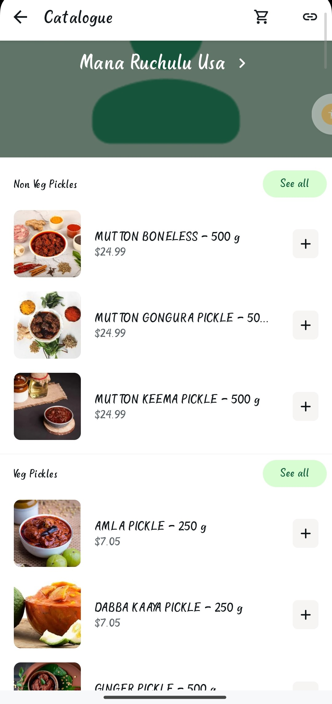
WhatsApp Business Catalog
Published products to the WhatsApp Business catalog, allowing customers to browse products directly within WhatsApp.
Click image to view full size.
To support product promotion and brand communication, I designed marketing brochures using Canva for the Manaruchulu US website. The brochures highlighted traditional Andhra food products while maintaining a consistent visual identity and clear product information.
Designed clean and visually appealing brochures that reflected the brand's traditional food identity.
Highlighted featured products using images, descriptions and pricing to support marketing campaigns.
Maintained consistent fonts, colours and layouts across all promotional materials.
Created brochure designs that could be shared digitally to promote products and increase customer awareness.
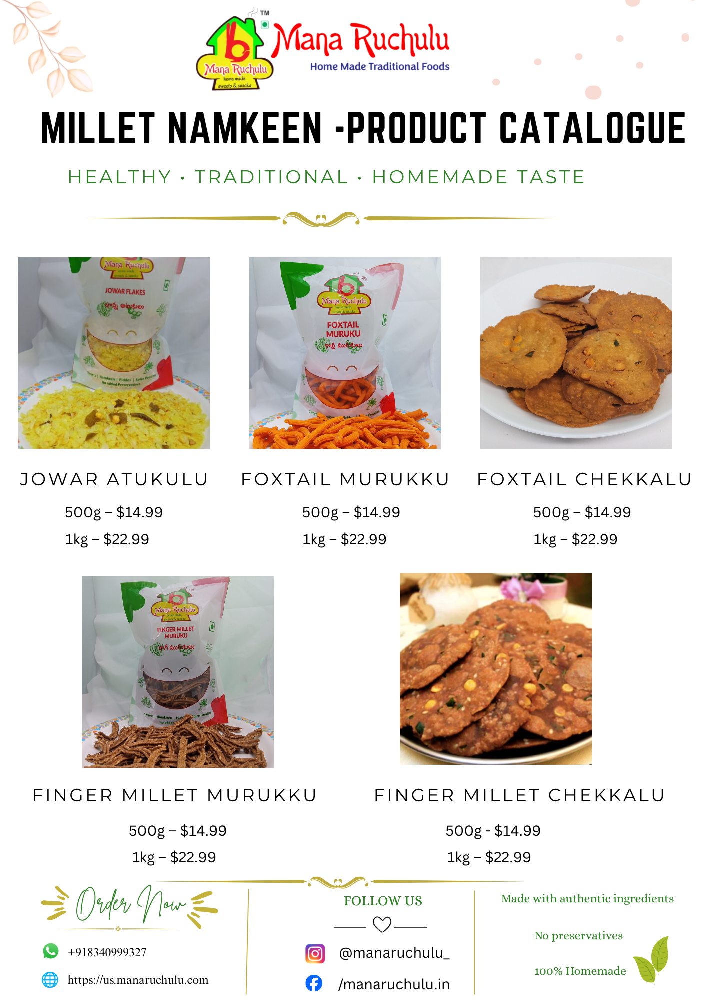
Promotional brochure designed in Canva for the Manaruchulu US website.
Click the image to view in full size.
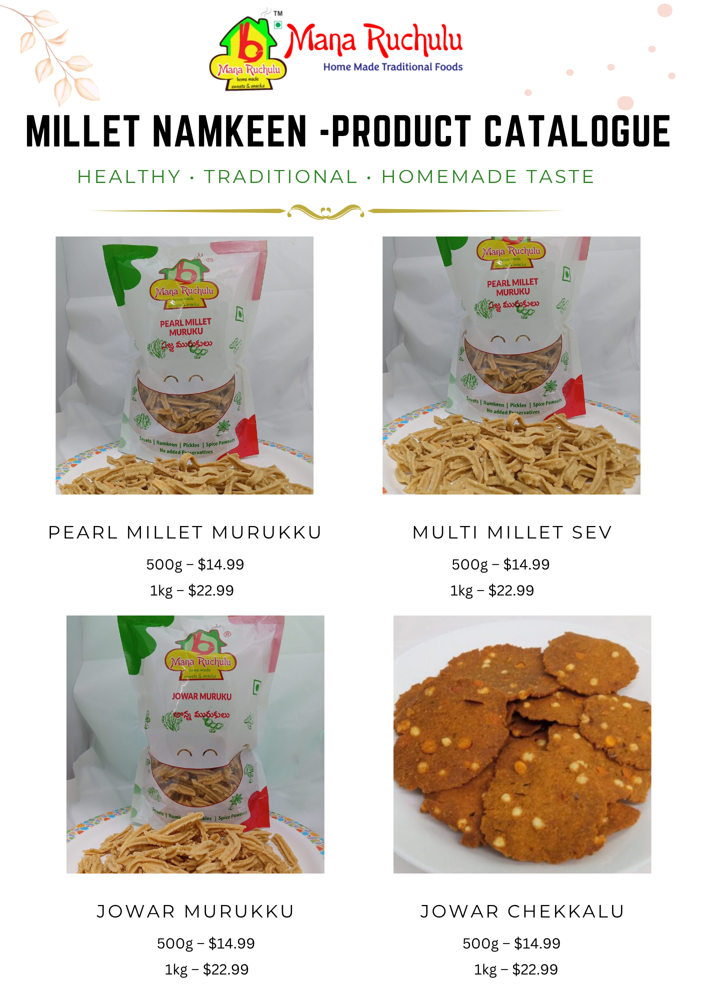
Product brochure highlighting traditional Andhra food products.
Click the image to view in full size.
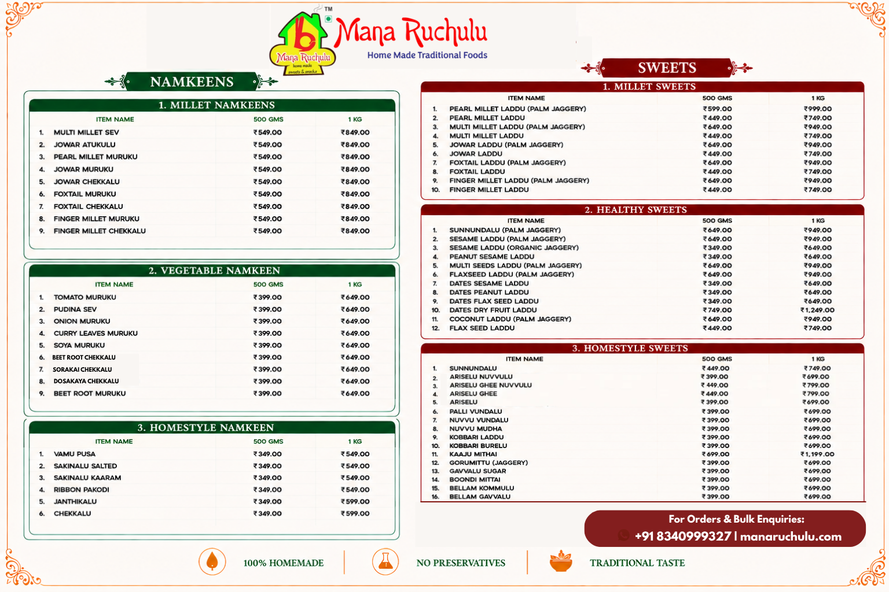
Canva marketing material created for digital product promotion.
Click the image to view in full size.
Designing brochures strengthened my understanding of visual communication and how marketing materials support product promotion, customer engagement and overall brand presentation.
Working on a live e-commerce website presented practical challenges beyond simply completing marketing tasks. Throughout the internship, I learned to analyze problems, adapt to different requirements and implement solutions using SEO, content optimization and digital marketing tools.
Identifying search terms that matched customer intent for traditional Andhra food products while targeting both Indian and US audiences.
Conducted keyword research using Ubersuggest, analyzed search intent and selected relevant keywords for product pages, category pages and blog content.
Writing product descriptions and blogs that were informative for customers while remaining optimized for search engines.
Applied keyword research, improved content structure and optimized metadata using Yoast SEO to balance readability with SEO best practices.
Organizing products consistently across the website, Facebook Commerce Manager and WhatsApp Business catalogs.
Maintained accurate product information, organized catalog structures and ensured consistent product details across different platforms.
Adapting to various digital marketing platforms while working on real business tasks.
Gained hands-on experience using WordPress, Ubersuggest, Google Search Console, Yoast SEO, Meta Commerce Manager, Canva and Google Ads while applying each tool in practical marketing activities.
Working on a live e-commerce brand allowed me to apply digital marketing concepts in a practical environment. The experience strengthened both my technical skills and my understanding of how different digital marketing activities work together to improve online business performance.
Learned how keyword research, on-page SEO, technical SEO and off-page SEO contribute to improving organic search visibility and website performance.
Improved my ability to create SEO-friendly product descriptions and blog content that balanced search optimization with user readability.
Gained practical experience managing product information, catalogs and website content across WordPress, Meta Commerce Manager and WhatsApp Business.
Developed a broader understanding of how SEO, content creation, social commerce, design and analytics work together to support business growth.
This internship helped me move beyond theoretical knowledge by applying digital marketing concepts to a real business. It strengthened my confidence in using industry tools, solving practical challenges and contributing to projects that supported the company's online presence and customer engagement.
This internship provided valuable hands-on experience working on a live e-commerce brand serving customers in both India and the United States. Throughout the project, I applied SEO strategies, created optimized website content, monitored search performance, supported off-page SEO initiatives and managed product catalogs across multiple platforms. It strengthened my practical understanding of digital marketing workflows and improved my confidence in using industry tools to contribute to real business objectives.